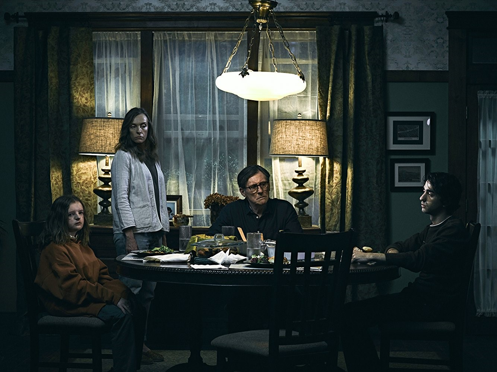
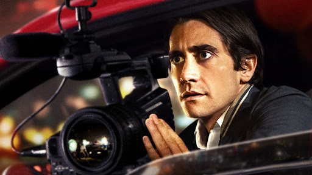

Após a morte da reclusa avó, a família Graham começa a desvendar algumas coisas. Mesmo após a partida da matriarca, ela permanece como se fosse uma sombra sobre a família, especialmente sobre a solitária neta adolescente, Charlie, por quem ela sempre manteve uma fascinação não usual. Com um crescente terror tomando conta da casa, a família explora lugares mais escuros para escapar do infeliz destino que herdaram.

Enfrentando dificuldades para conseguir um emprego formal, o jovem Louis Bloom decide entrar no agitado submundo do jornalismo criminal independente de Los Angeles. A fórmula é correr atrás de crimes e acidentes chocantes, registrar tudo e vender a história para veículos interessados
Batman: Gotham Knight (Batman: O Cavaleiro de Gotham) foi produzido pelos estúdios de animação japoneses Studio 4°C, Madhouse, Bee Train, and Production I.G. em parceria com a DC Comics e Warner Bros. Animation. São seis curtas – cada um com um estilo de animação diferente – que se passam entre os filmes Batman Begins (2005) e Batman O Cavaleiro das Trevas (2008). O morcegão é dublado originalmente em todos os segmentos por Kevin Conroy, artista regular das animações do Universo Animado DC.

Mesmo com o raciocínio lento, Forrest Gump nunca se sentiu desfavorecido. Graças ao apoio da mãe, ele teve uma vida normal. Seja no campo de futebol como um astro do esporte, lutando no Vietnã ou como capitão de um barco de pesca de camarão, Forrest inspira a todos com seu otimismo. Mas a pessoa que Forrest mais ama pode ser a mais difícil de salvar: seu amor de infância, a doce e perturbada Jenny.

Em um futuro próximo, Thomas Anderson (Keanu Reeves), um jovem programador de computador que mora em um cubículo escuro, é atormentado por estranhos pesadelos nos quais encontra-se conectado por cabos e contra sua vontade, em um imenso sistema de computadores do futuro. Em todas essas ocasiões, acorda gritando no exato momento em que os eletrodos estão para penetrar em seu cérebro.
À medida que o sonho se repete, Anderson começa a ter dúvidas sobre a realidade. Por meio do encontro com os misteriosos Morpheus (Laurence Fishburne) e Trinity (Carrie-Anne Moss), Thomas descobre que é, assim como outras pessoas, vítima do Matrix, um sistema inteligente e artificial que manipula a mente das pessoas, criando a ilusão de um mundo real enquanto usa os cérebros e corpos dos indivíduos para produzir energia.
Morpheus, entretanto, está convencido de que Thomas é Neo, o aguardado messias capaz de enfrentar o Matrix e conduzir as pessoas de volta à realidade e à liberdade.